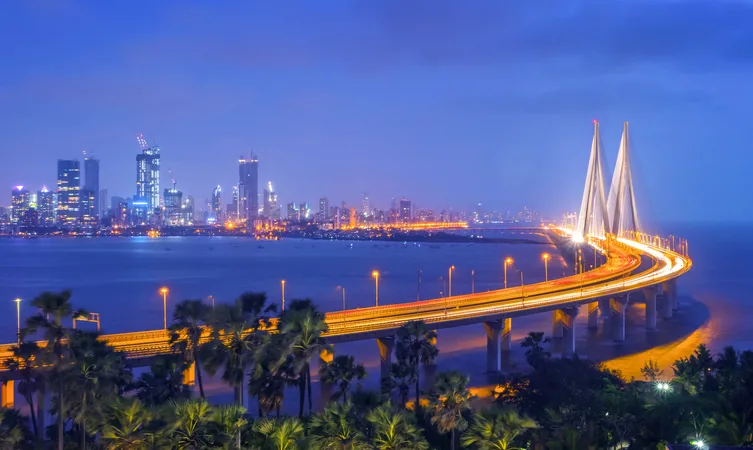
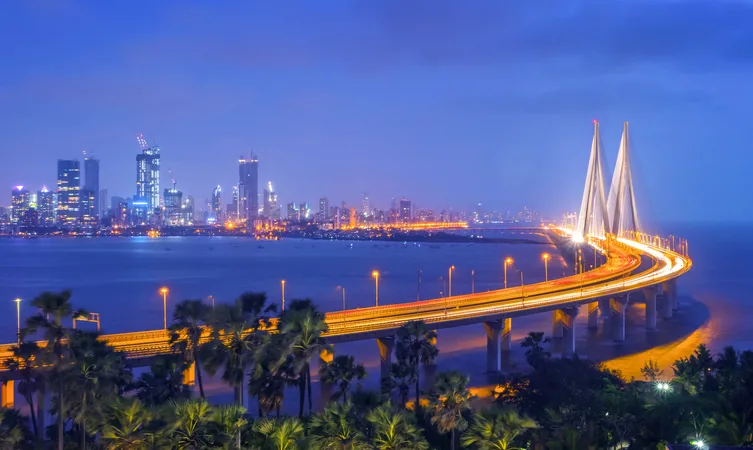

Gateway of India
One of the most distinguishing landmarks that signify the city, the Gateway of India came into existence in the year 1924 during the British Raj to celebrate the arrival of King George V and Queen Mary to Bombay. The structure marks the area as one of India’s major ports which formally symbolised elements of British grandeur. Located in the waterfront area of Apollo Bunder, today it is one of the most popular tourist places in Mumbai for people from all over the globe who flock just for a glance at this monument.
The Gateway of India is a landmark that denotes India's main ports and is a noteworthy vacation destination for guests who touch base in India surprisingly. At a certain point in time, this landmark spoke to the greatness of the British Raj in India. A most loved spot for visitors, these days, and this landmark pulls in vendors, food stalls and also the photography buffs. The passing of the First Battalion of the Somerset Light Infantry; was recorded as the primary headliner that occurred at the Gateway of India.
The design plan of the Gateway of India is constituted of a vast curve, with tallness of 26m. The landmark is worked in yellow basalt and insoluble cement. The basic arrangement of Gateway of India is outlined in the Indo-Saracenic style.
Highlights: One can also discover hints of Muslim building styles joined in the structure of the pretentious building. The focal arch of the landmark is around 48 feet in the distance across, with an aggregate stature of 83 feet. Planned with multifaceted latticework, the 4 turrets are the noticeable components of the whole structure of the Gateway of India.
There are steps developed behind the curve of the Gateway that prompts the Arabian Sea. The landmark is organized such that one can witness the vast breadth of the blue blanket right ahead, welcoming and sending off ships and visitors.
Distance from Mumbai Airport: 25 km
Entrance fee:The entry is free of cost.
 
